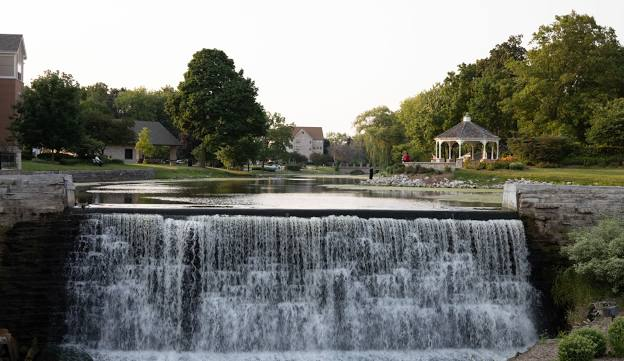

Menomonee Falls, Wisconsin, is a charming destination with much to offer. The village boasts beautiful parks like Lime Kiln Park and Menomonee Park, perfect for hiking and picnicking. Historic downtown features quaint shops, local eateries, and vibrant community events. Old Falls Village showcases the area’s rich history with 19th-century buildings. Outdoor enthusiasts can enjoy the Bugline Trail for biking and walking. Golfers will appreciate the Silver Spring Golf Club. Local breweries such as Falls Brewery offer a taste of the region’s craft beers. The village hosts numerous events, including farmers' markets and festivals. Family-friendly attractions like the Schlitz Audubon Nature Center are nearby. Proximity to Milwaukee allows easy access to big-city amenities while enjoying a peaceful retreat.

Send email